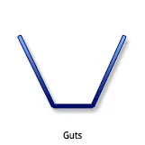
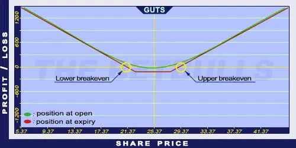

Description and use

Guts option strategy is a version of the Strangle, but more expensive. Instead of buying OTM options, lower ITM Call and higher ITM Put options are purchased. This increases the initial costs. The expiration of the options must be the same. It is disadvantageous if the two strike prices are far from each other. A change of the share price in any direction will generate profit. The direction of the market is neutral. The investor speculates on shares with moving share prices and increasing volatility. The strategy is a net debit investment. The maximum risk is limited, the maximum profit is potentially unlimited. The optimal maturity is three months. If the share prices aren’t moving, the position should be sold one month before expiration.
- Type: Neutral
- Transaction type: Debit
- Maximum profit: Unlimited
- Maximum loss: Limited
- Strategy: Volatility strategy
Opening the Position
Guts Option Positions
- Buy lower strike (ITM) Call options.
- Buy higher strike (ITM) Put options (same quantity and expiration as the Call options’).
Steps
Entry:
- Look for shares showing pennant or similar shapes on charts.
Exit:
- When share prices are increasing, sell the Call option.
- When share prices are decreasing, sell the Put option.
Basic Characteristics
- Maximum loss: Net debit - difference between strike prices.
- Maximum profit: Unlimited.
- Time decay: Time decay has a negative effect on the value.
- Lower breakeven point: Lower strike price - (Net debit - Difference between strike prices).
- Upper breakeven point: Higher strike price - (Net debit - Difference between strike prices).
Advantages and Disadvantages
Advantages:
- Profit is generated when the share price changes in any direction.
- Limited loss.
- The profit is potentially unlimited when share prices are moving.
Disadvantages:
- High costs.
- The share price must change significantly to generate profit.
- The Bid/Offer spread can have a negative influence on the investment’s quality.
Closing the Position
Sell the Call and Put options.
Mitigation of Losses
Sell the position when there is one month left until expiry.
Example

Guts strategy example with ABCD traded for $25.37 on 17.05.2017. The investor engages in the following:
- Buy a Long Call option with a strike price of $22.50, expiring in August 2017, for a premium of $4.20.
- Buy a Long Put option with a strike price of $27.50, expiring in August 2017, for a premium of $3.80.
- Net debit: $8.00
- Maximum loss: $3.00
- Maximum profit: Unlimited
- Lower breakeven point: $19.50
- Upper breakeven point: $30.50